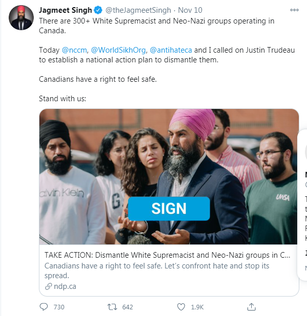
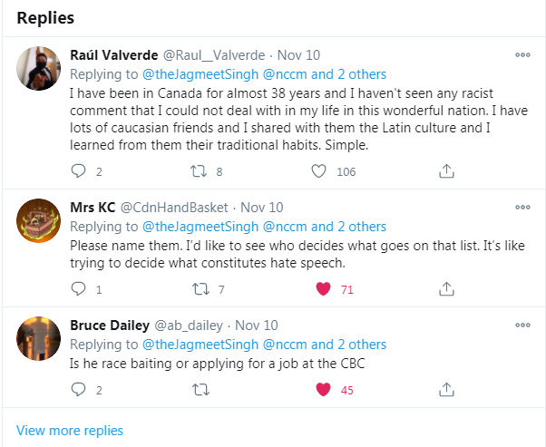
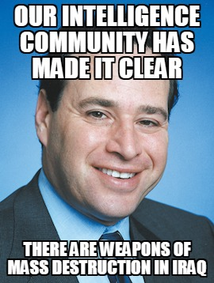
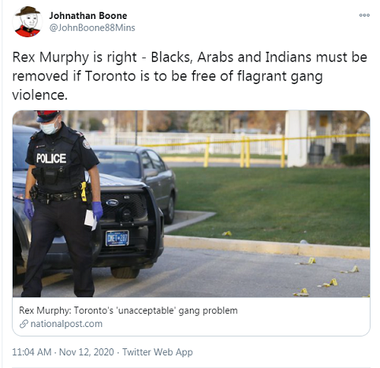

Real News - Hundreds of Canadian Nazi Groups
November 12th, 2020
Well goyim, sometimes a picture speaks a thousand words.

And it’s worth mentioning, that while these responses aren’t Our Guys, this is pretty standard fare for the mood of the people.

But rather than leave you with that, I headed on over to this NDP call to “Take Action: Dismantle white supremacist and neo-nazi groups in Canada."
TDC_ARTICLE_START
Earlier this year, the Proud Boys, a right-wing extremist group that promotes white supremacist views made international headlines after being bolstered by Donald Trump.
Its founder is from Canada.
This isn’t only a problem in the United States. In Canada, there are 300 active far-right extremist groups operating across the country, right now.
Here are some additional facts:
• Canada has seen a 200% increase in active hate groups in the last 5 years.
• Criminal and hate motivated incidents reported to police rose by more than 60% between 2014 and 2017.
• In 2018, the federal government’s own report identified that right-wing extremism poses a threat to Canadian society.
Hate and far-right ideology spread like fire online and Canada has been slow to tackle this issue.
TDC_ARTICLE_STOP
Wew lads, lot to unpack here. First of all goy, aren’t you happy that you were taxed to pay for a report that “right wing extremism poses a threat to Canadian Society”? Does that make you feel good?
Ignoring of course how absurd it is to take that report seriously. Or rather, to take it seriously as a matter of truth. You should take it seriously politically.
In fact, I would love to see this report, and think I need to write something up for this, but you may notice that he never bothers actually naming the “300+ Neo-Nazi Groups.” Apparently the Proud Boys are on there, which is an utter absurdity, considering that they are a civnat group that is frankly kind of weak as far as I’m concerned.
It feels obligatory, but you will notice that the Zionist Mass Murder Propagandists who lied us into Iraq and Afghanistan with lies about Saddam Hussein having weapons of mass destruction and working with the Taliban are not on this list. Despite them going to jail, or having far worse done to them, being massively popular with the people.
Luckily nobody died in that war.
TDC_ARTICLE_START
After the Christchurch attacks in New Zealand in 2017, Justin Trudeau pledged to fight online hate, but instead of making social media accountable, he decided to trust social media companies with voluntary measures.
During the last campaign, he committed to truly make them accountable and yet, no action.
All Canadians have a right to feel safe.
TDC_ARTICLE_STOP
Huh, funny. I personally know a guy who was jumped by a Somali. I guess if only 300 Neo-Nazis had their rights violated then he would have been safe. I also know people who have had screaming, mentally ill homeless chase them in Downtown Vancouver. I guess White People being safe in Canada is not a priority for Jag.

Anyway, I’m skipping ahead to the part where he outlines the plan of action that this referendum supports.
TDC_ARTICLE_START
Immediately implement measures to tackle online hate including regulations to have social media platforms remove hateful and violent content from their platforms;
Hosting a federal-provincial-territorial meeting to discuss the rise in hate crimes in Canada, coordinate our collective efforts, identify best practices to countering this rise and establish a national action plan to dismantle white supremacy extremist organizations;
Creating and properly funding dedicated hate crime units in every community across Canada;
Establishing national standards for identifying and recording all hate incidents and their dispensation in the justice system; and
Working in collaboration with non-profits to facilitate the reporting of hate crimes.
TDC_ARTICLE_STOP
So basically Orwellian stuff here. I thought the whole thing was pretty much a joke until the part about “Creating and funding dedicated hate crime units in every community across Canada.”
Political problems require political solutions.